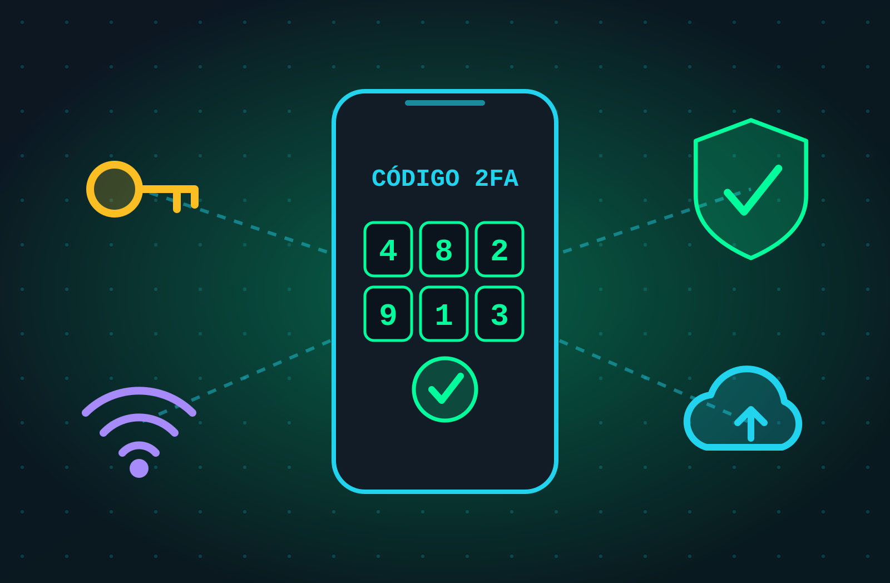
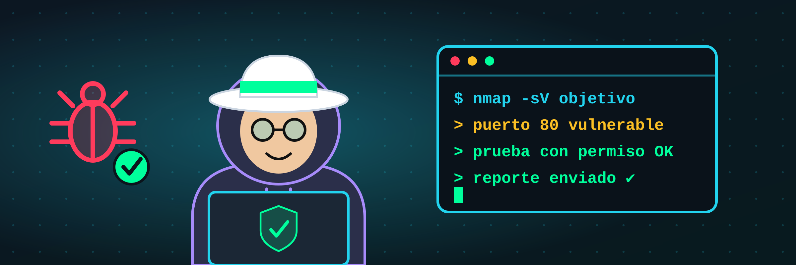

> QUE ES LA CIBERSEGURIDAD
Es el arte de proteger tus datos, tus dispositivos y tu vida digital de quien quiere robarlos, espiarlos o destruirlos.

Tu celular, tu banco, tu colegio y hasta tu consola dependen de ella.
LOS 3 PILARES (TRÍADA CIA)
Confidencialidad
Solo quien debe, puede ver la información.
Integridad
Nadie modifica tus datos sin que lo notes.
Disponibilidad
Todo funciona cuando lo necesitas.
> Tipos de hackers
Sombrero blanco
El hacker ético
Tiene permiso. Busca fallos para repararlos antes que los malos. Trabaja como pentester o cazando recompensas (bug bounty).
Sombrero negro
El criminal
Sin permiso y por dinero: roba datos, secuestra equipos con ransomware y vende accesos.
Sombrero gris
La zona gris
Entra sin permiso pero sin mala intención y luego avisa del fallo… aun así es ilegal.
Script kiddie: Usa herramientas hechas por otros sin entender cómo funcionan.
Hacktivista: Hackea por una causa política o social (como Anonymous).
> Malware: software enemigo
Malware = programa hecho para dañar, espiar o robar. Estos son los que más vas a encontrar:
Virus
Se pega a archivos y se copia cuando los abres.
Gusano
Se propaga solo por la red, sin que hagas nada.
Troyano
Parece un programa legítimo, pero abre la puerta al hacker.
Ransomware
Secuestra tus archivos y pide rescate en cripto.
Spyware
Te espía: cámara, micrófono y mensajes.
Keylogger
Graba cada tecla que escribes, contraseñas incluidas.
Adware
Te llena de anuncios y rastrea lo que haces.
Botnet
Tu equipo se vuelve un zombi al servicio del atacante.
> Así te hackean (fácil)
Phishing
Un correo, SMS o WhatsApp falso que te hace entregar tu clave.
Contraseñas débiles
123456, 'password' o tu fecha de nacimiento: se rompen en segundos.
WiFi pública
Alguien en la misma red puede espiar lo que haces.
Ingeniería social
No hackean la máquina: te hackean a ti con engaños y confianza.
USB desconocido
Ese pendrive 'perdido' puede instalar malware al conectarlo.
Software desactualizado
Fallos ya conocidos que tienen exploit público.
El eslabón más débil de la seguridad siempre es el humano.
> Cómo protegerte

Tu mejor antivirus es tu cabeza
Desconfía, verifica y luego haz clic.
Claves largas + gestor
Una distinta por cuenta; usa un gestor de contraseñas.
Activa el 2FA
Aunque roben tu clave, no entran sin el segundo código.
Actualiza todo
Cada parche cierra una puerta que ya conocen los atacantes.
Piensa antes del clic
¿Remitente raro? ¿Urgencia? ¿Premio gratis? Es trampa.
VPN en WiFi pública
O mejor: usa tus datos móviles para lo importante.
Haz copias de seguridad
Regla 3-2-1: 3 copias, 2 medios, 1 fuera de casa.
> Ataques web y de red
SQL INJECTION
$ login usuario: admin' -- clave: (cualquiera) > ACCESO CONCEDIDO
Engañas a la base de datos para que se salte la contraseña. Por eso las webs deben validar todo lo que escribes.
XSS
Inyectas código en una web y se ejecuta en el navegador de otros usuarios.
DDoS
Miles de equipos saturan un servidor hasta tumbarlo.
Man-in-the-Middle
Se ponen entre tú y el sitio para leer todo lo que envías.
Fuerza bruta
Probar millones de contraseñas hasta acertar.
> Así piensa un hacker
1. Reconocer
Recolecta información pública (OSINT) del objetivo.
2. Escanear
Busca puertas abiertas y servicios con fallos.
3. Entrar
Explota una vulnerabilidad y gana acceso.
4. Quedarse
Deja una puerta trasera para volver cuando quiera.
5. Borrar huellas
Elimina registros para que nadie lo note.
HERRAMIENTAS DEL HACKER ÉTICO
Los hackers éticos siguen estas mismas fases, pero con permiso, para reparar los fallos.
> Criptografía: esconder la verdad
CIFRADO CÉSAR (+3)
HOLA → KROD
HASH (HUELLA DIGITAL)
hello → 5d41402a…c592
Simétrico
Una sola llave para cifrar y descifrar. Rápido. Ej: AES (tu WiFi y tus archivos).
Asimétrico
Llave pública para cifrar, llave privada para abrir. Ej: RSA, el candado de HTTPS.
Hash
Una huella que no se puede revertir. Así se guardan las contraseñas, sin guardarlas.
> Cada área tiene su arena
ICPC
Maratón mundial de programación por equipos: resuelve problemas de algoritmos lo más rápido posible.
Hackathon
24 a 48 horas para crear una app o solución desde cero y presentarla ante jurados.
CTF Capture The Flag
Hackeas sistemas hechos a propósito (legal) para encontrar banderas ocultas y sumar puntos.
flag{h4ck3r_n4c3}
> Conviértete en el que protege
Pentester
Te pagan por hackear con permiso.
Bug bounty
Empresas pagan recompensas por fallos.
Analista SOC
Vigila ataques en tiempo real.
Forense digital
Investiga ciberdelitos y recupera evidencia.

¿Hackeas o te hackean?
Faltan millones de profesionales de ciberseguridad en el mundo. Empieza hoy con un CTF.